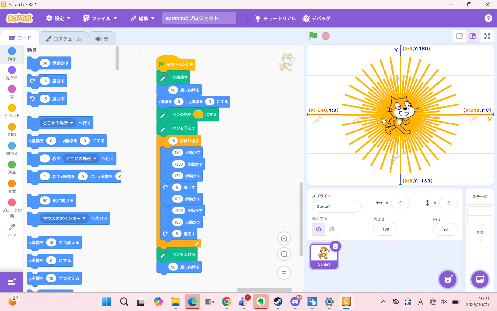
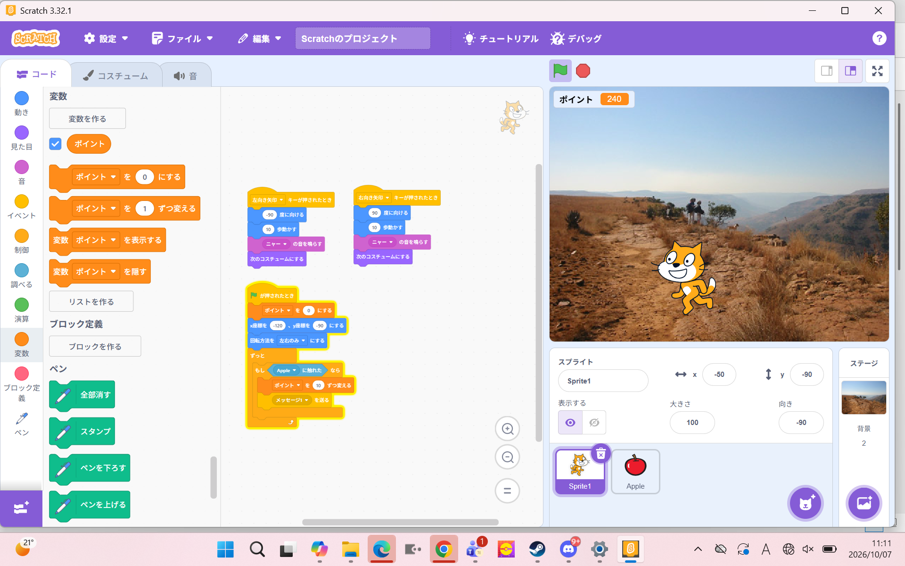

1週目のレポート ： 公大高専１年実習I-1
4b班25番 つぶあん
第1週目
1-1 サイエンスアート

1.内容
Stretch上でキャラクターが通った座標の位置にペンで線が描かれる仕組みを理解した。
例えば、座標を計算して最も効率のいい描き方を模索したり、
色が徐々に切り替わるような仕組みを理解した。
それを活用し、自分でサインアートを作成した。
2.感想 自分なりにサイエンスアートを頑張って作ってみたものの、
すごくシンプルになってしまい、工夫を凝らすこともできなかったため残念だと思った。
他の人はすごく奇天烈な動きをしていたり、
ローディング画面を再現している人もいて、発想力がすごいと感じました。
1-2 ゲーム

1.内容
scratch上でキャラクターを左右に動かし、
りんごのスプライトに触れることで変数のポイントが増えていく、
というプログラムを作成しました。
2.感想
プログラミングをすることはほぼほぼ初めての状態でしたが、
使っていたプログラムは条件や変数などの理解しやすい内容になっていたので
初めの授業から躓きにくくて、楽しくゲームを作成できました。
隣に物理演算を作っている人がいたので横目で見ていると
ものすごい量のコードと変数があったので
怖気づきましたが、変数はＩコースに入るなら大切な要素だと感じたため覚えておこうと思いました。
1-3 ホームページ作成
私のホームページ
1.内容 Githubにて自分のホームページを作成する手順を聞きながら
簡単な操作の方法やコードを学びそれを活用して
提出する用のレポートを作成した。
2.感想
手順に沿ってHTMLコードを編集することで仕組みがよく理解できました。
自分の書いたコードが実際のWebページとして反映されたときは達成感がありました。
今後もHTMLやWEB技術の知識を深めていきたいです。
各ページへのリンク
1週目のレポート
2週目のレポート
3週目のレポート
私のホームページ